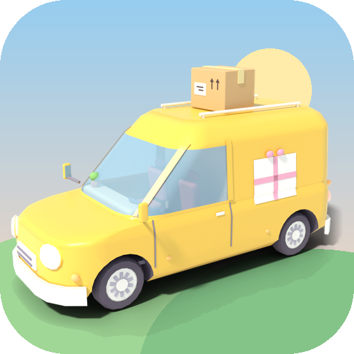
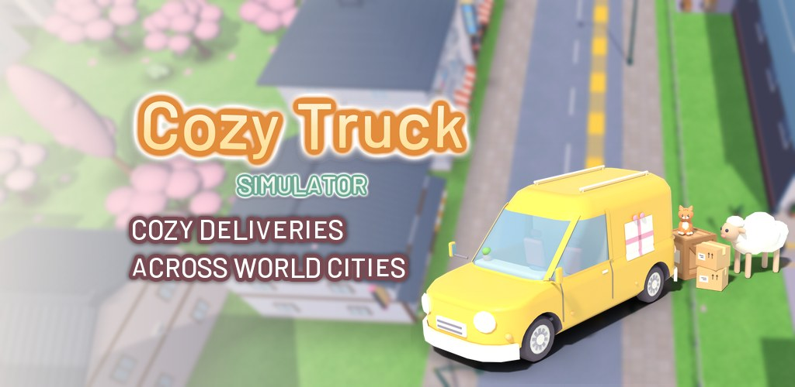
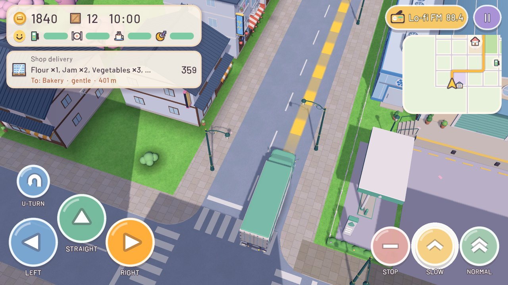
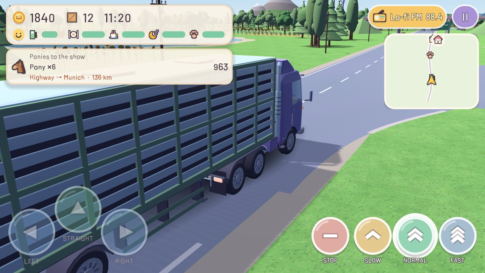
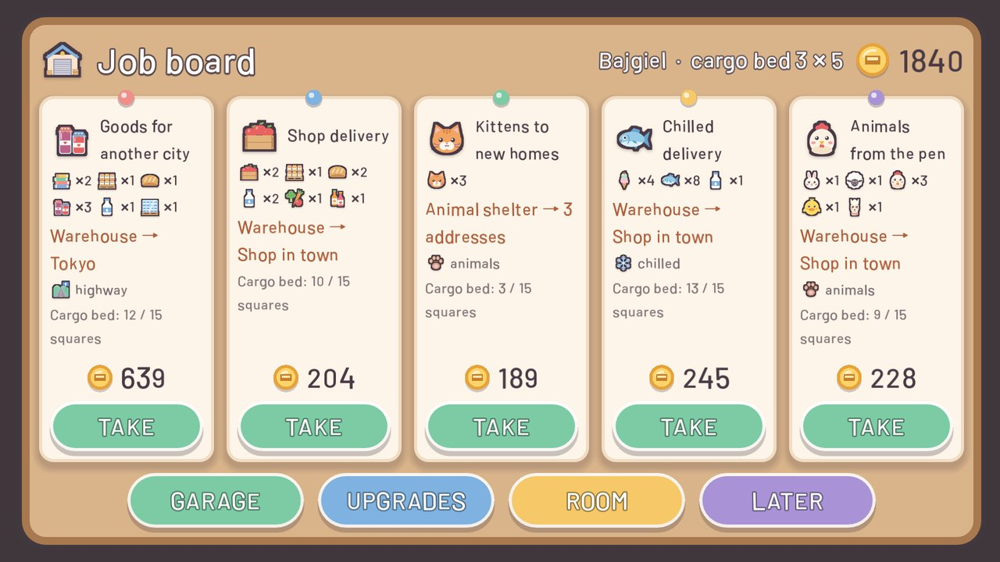
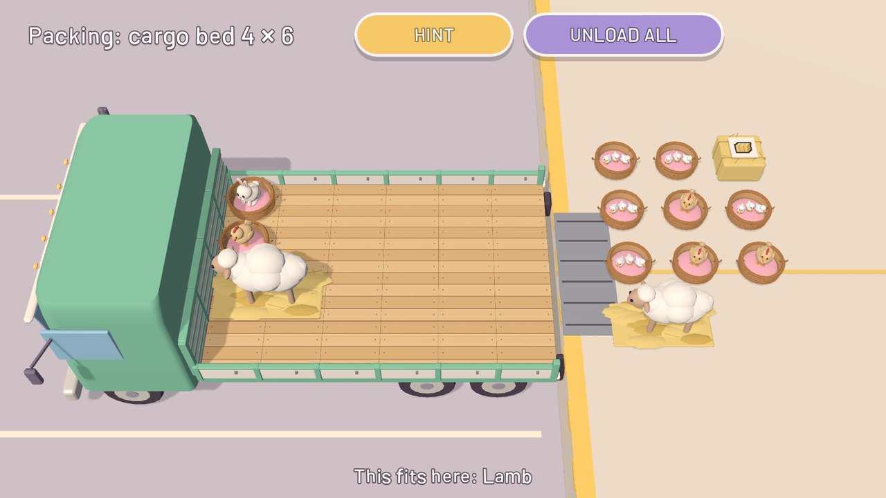
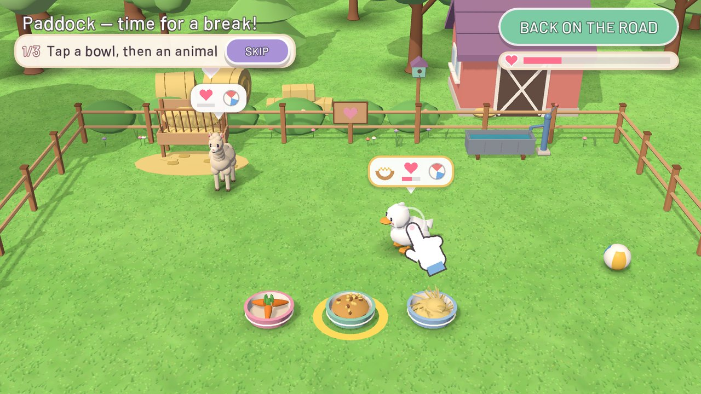
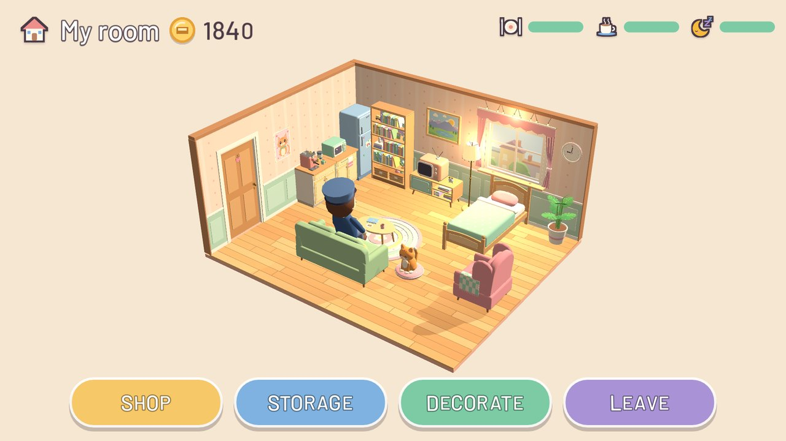
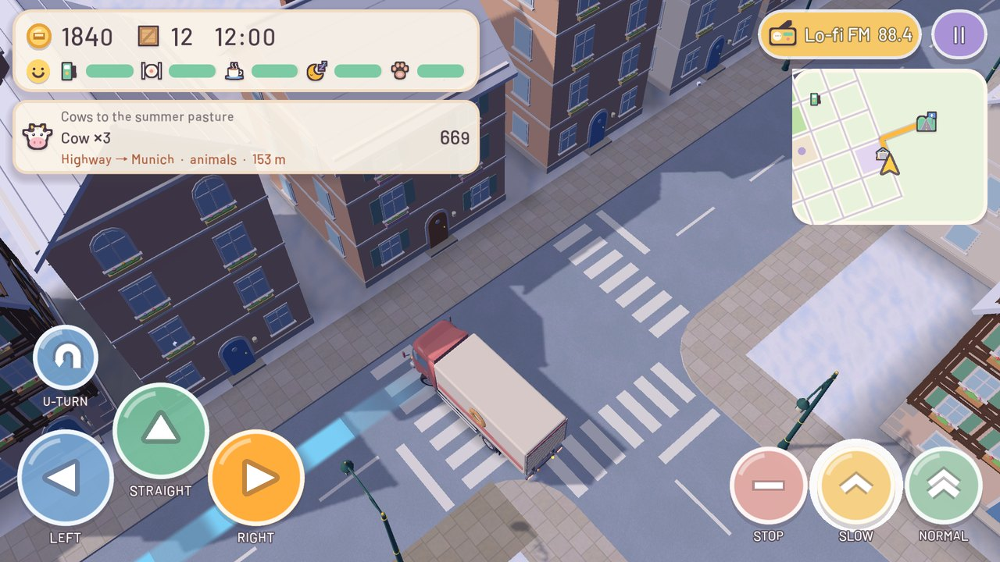
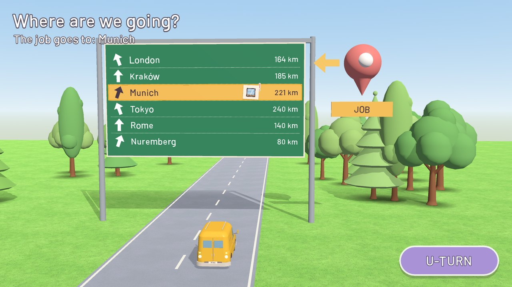

Your own cozy delivery company
Climb into a little delivery van and run your own cozy trucking company. No crashes, no timer and no game over — just you, your truck, the radio and parcels, kittens and ponies waiting for a ride.
Get it on Google PlayFree · Android









The game is free and shows ads: a full-screen ad about every 2 minutes of driving and optional rewarded videos you choose to watch (trial drives). A one-time Full Version removes all ads and unlocks every city, truck, upgrade, paint, outfit and warehouse expansion.
No account needed. Languages: English, Polish, German, Czech, French, Spanish, Portuguese, Italian and Japanese.